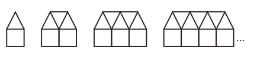

A partir de cette figure : <br/>
<br/>
<br/> <br/>
<br/>
<br/>
Sachant que pour 1 carré, il y a 1 triangles, <br/>
pour 2 carrés, il y a 3 triangles, <br/>
pour 3 carrés, il y a 5 triangles, <br/>

